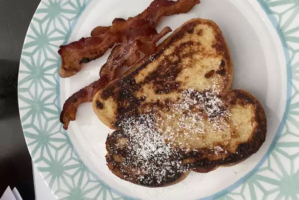

French Toast

Description
Delicious french toast
Ingrediants
- whit bread
- eggs
- milk
- vanilla/cinammon
- salt
- butter
Steps
- Whisk milk, eggs, vanilla, cinnamon, and salt together in a shallow bowl.
- Lightly butter a griddle and heat over medium-high heat.
- Dunk bread in the egg mixture, soaking both sides. Transfer to the hot skillet and cook until golden, 3 to 4 minutes per side. Serve hot.